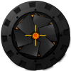

32
文本样式
标题、正文、链接、按钮、小号说明文字，用来检查滤镜对文字可读性的影响。
Unfiltered webpage benchmark
这个页面保持常规网页外观：普通字体、真实布局、图片、SVG、Canvas、图表、视频、表格、表单和滚动内容都不带任何滤镜。后续 shader 可以通过页面底部预留的接口挂载。
标题、正文、链接、按钮、小号说明文字，用来检查滤镜对文字可读性的影响。
卡片、表格、标签、输入框、导航、图片、视频、SVG、Canvas 和图表。
页面保留一个全局对象和一个 canvas 容器，供后续滤镜代码接管。
Article sample
开发网页滤镜时，最容易被误判的是效果本身。若测试页面已经带有辉光、暗背景、特殊字体或像素化视觉，就很难判断 shader 是否真的适合普通网站。这个页面提供的是更接近日常网页的输入。
这里包含长段落、中文标点、英文词组、内联链接、粗细不同的标题和普通按钮。后续滤镜可以覆盖整个页面，也可以只覆盖带有 data-shader-target 的区域。
基准页的责任不是好看得像最终效果，而是暴露最终效果在真实内容上的问题。
你可以把滤镜代码独立写成一个 JS 文件，然后调用 window.WebShaderTestHost.mount 取得覆盖层。当前实现只提供占位接口，不会改变任何视觉输出。
Dashboard sample
| 项目 | 类型 | 亮度 | 运动 | 状态 |
|---|---|---|---|---|
| 正文阅读页 | Text | 中 | 低 | 稳定 |
| 视频素材 | Media | 高 | 中 | 需观察 |
| Canvas 动画 | Canvas | 中 | 高 | 需观察 |
| 数据图表 | Chart | 中 | 低 | 稳定 |
Color blocks
SVG assets
这里直接引用本地 SVG 文件，用于观察后续滤镜对矢量边缘、透明背景、纯色块和图形细节的影响。

Native Canvas
两个画布均由 Canvas 2D 实时生成，不使用 shader。它们提供线条、粒子、渐变、透明度、运动模糊感和高频细节。
Chart.js
图表使用本地 Chart.js UMD 文件生成。鼠标悬停可触发 tooltip，按钮会随机刷新数据，用来检查滤镜对 canvas 图表、颜色、网格线和交互状态的影响。